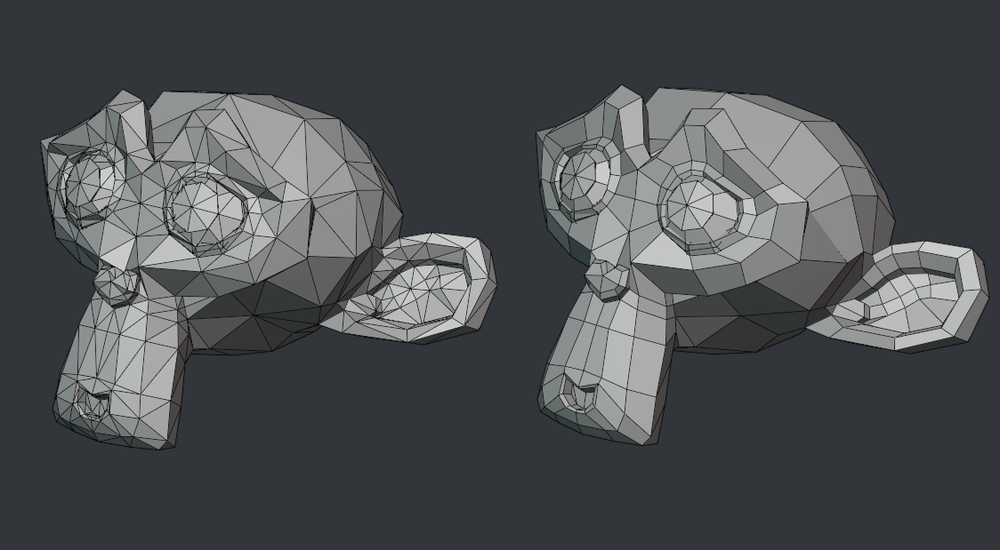
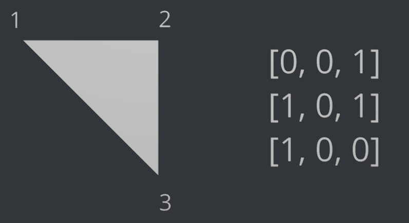
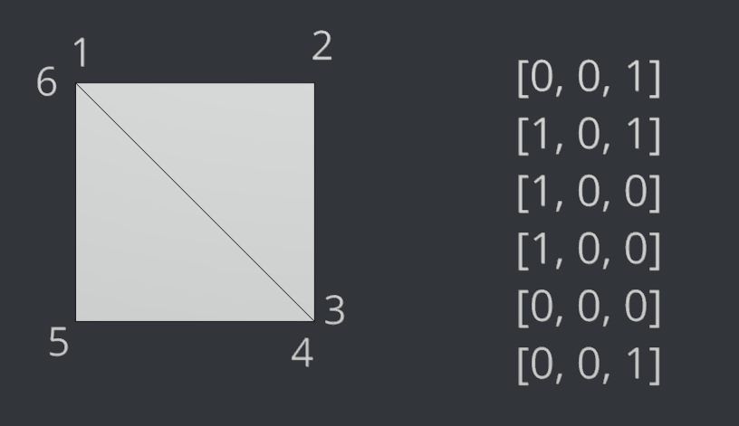
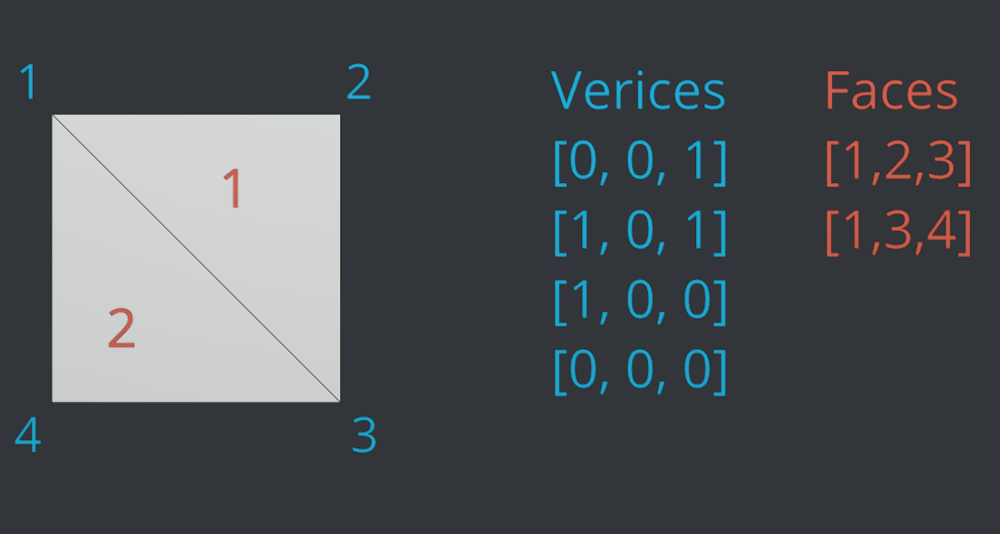
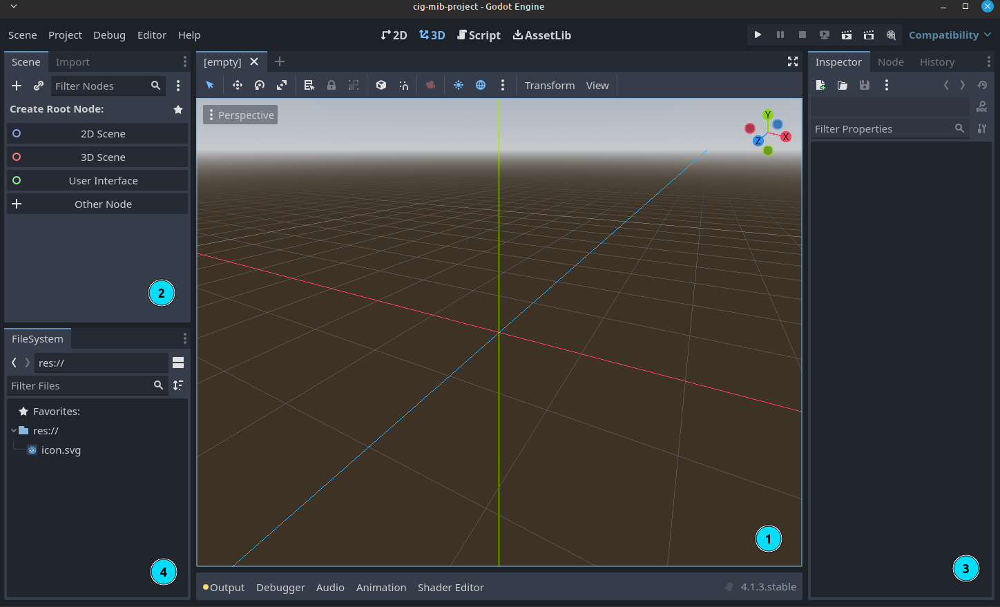

1. Datenstrukturen in 3D & Godot Basics
Datenstrukturen in 3D - Meshes
Die wohl wichtigste Methode zur Repräsentation dreidimensionaler Objekte im Speicher eines Computers ist das Drahtgittermodell - englisch Mesh. Hierbei wird die Form eines Objektes approximiert, indem es aus Dreiecken modelliert wird.
 Das Maskottchen der 3D Software Blender als Drahtgittermodell aus Drei-, bzw Vierecken
Oft wird dem Nutzer von 3D Software auch ermöglicht Formen mit 4 oder noch mehr Eckpunkten zum modellieren zu verwenden, irgendwo auf dem Weg von der Benutzeroberfläche zur Grafikkarte werden diese jedoch immer wieder zu Dreiecken umgewandelt.
Grafikkarten sind über die Jahre immer besser darin geworden große Mengen dieser Dreiecke darzustellen und Lichsimulationen damit auszuführen. Effekte, die vor ein paar Jahren noch Filmen vorbehalten waren (bei denen jeder Frame minuten bis Stunden für das Rendering braucht), sind in odernen Videospielen inzwischen in 120 Frames pro Sekunde möglich.
Findet Nemo (Film) 2003
Subnautica (Videospiel) 2018
Zur Art der Abspeicherung dieser Dreiecke gibt es verschiedene Herangehensweisen. Die einfachste ist es, einfach eine Liste an Punkten zu speichern, die jeweils aus 3 Werten (x, y, z) bestehen.

Zur Optimierung des Renderings werden die Dreiecke meist nur aus einer Blickrichtung dargestellt (“Backface Culling”). Daher ist auch die Reihenfolge in der die Punkte gespeichert werden wichtig. Normalerweise gehen Renderengines davon aus, dass die Vorderansicht eines Dreiecks die ist, aus der die Eckpunkte der Reihenfolge nach im Urzeigersinn gespeichert sind.
Vertex Indices
Letztere Methode funktioniert für einfache Objekte, hat jedoch den Nachteil, dass Eckunkte (Vertices) die von mehreren Flächen verwendet werden für jede Fläche separat gespeichert werden müssen. Um Speicherplatz und Rechenleistung zu Optimieren wird meist mit sogenannten Vertex Indices gearbeitet.
Dabei werden die Punkte wie zuvor ein einer Liste gespeichert, jedoch wird eine zusätzliche Liste angelegt, in der jeweils die Indices von drei (oder je nach Format auch mehr) dieser Punkte angegeben werden, die eine Fläche bilden.
 Darstellung eines Vierecks mit einer Liste von Punkten von denen jeweils drei ein Dreieck bilden
 Darstellung eines Vierecks mit einer Liste von Punkten und einer separaten liste (“Faces”), die angeben wie die Flächen zwischen den Punkten gespannt werden sollen
Exportiert mit Blender eine 3D Datei mit nur einem einzigen sehr einfachem Objekt (Würfel) als “Wavefront .obj” Datei. Ignoriert die erzeugte .mtl Datei (diese betrifft Materialien) und öffnet die .obj Datei in einem Texteditor. Dieses Dateiformat ist so simpel, dass sich die einzelnen Vertices und Vertex indices einfach herauslesen lassen. Versucht anhand der Spezifikation auf Wikipedia herauszufinden, wie hier Vertices und Vertex Indices gespeichert sind.
Normalen und Texturkoordinaten interessieren uns hier vorerst nicht
Vertex Indices
Erste Schritte
In dieser Übung wollen wir uns mit dem Setup und ersten Schritten mit Godot beschäftigen.
- Ladet euch zunächst von godotengine.org die aktuelle Version von Godot herunter. Wir werden für diese Vorlesung nur die Standartversion der Engine (nicht .NET) benötigen.
- Entpackt die .zip Datei.
- Eine Installation ist nicht nötig. Die Engine kann nun mit der .exe Datei (die Datei ohne “_console” am Ende) gestartet werden.
Dieses Script behandelt die Version 4.2. Zukünftige Versionen könnten eventuell Änderungen vornehmen, normalerweise bleibt die API bei Updates jedoch großteils unverändert.

Die Engine öffnet sich
1 Der Szenenviewer dient der Vorschau in der 3D / 2D Szene und der transformation von Objekten.
2 Din diesem Bereich kann die Szenenhierarchie überblickt und bearbeitet werden.
3 Im Inspector können die Eigenschaften des aktuell ausgewählte Objekts (Node*) bearbeitet werden.
4 Das “FileSystem” ist die tatsächliche Ordnerstruktur des Projekts. Hier werden Texturen, Modelle und Scripte gespeichert und verwaltet.
freie Arbeit (45-60min)
Arbeite die Godot Dokumentation “Getting started” (oder auf deusch) durch oder mache dich anderweitig mit den Grundkonzepten von Godot bekannt. Die Sektion “Your first 2D Game” kann übersprungen werden, da wir uns hier ausschließlich mit der 3D Funktionalität von Godot beschäftigen werden.